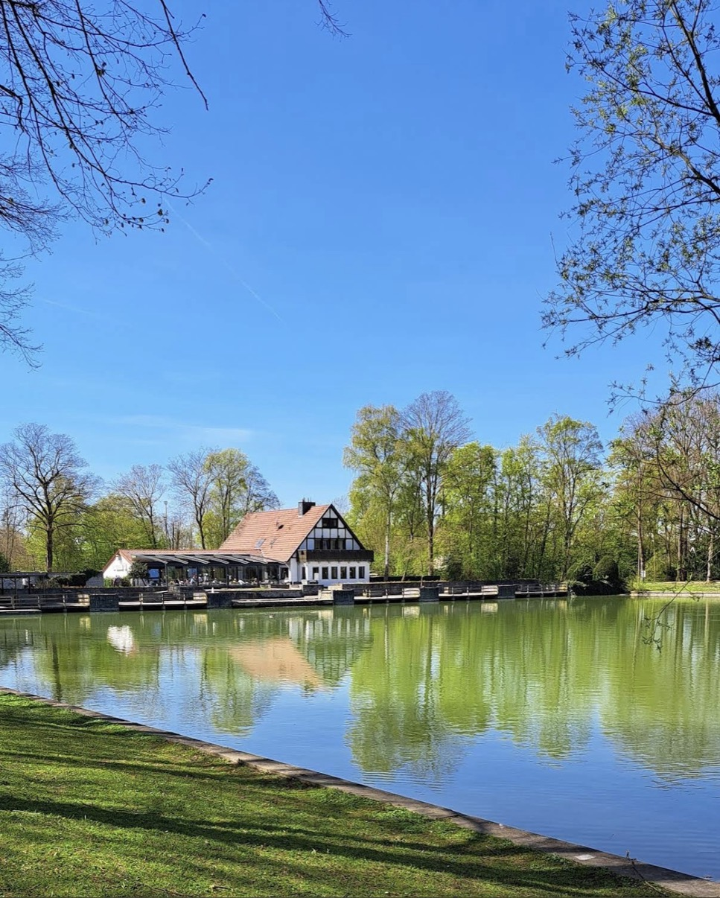

Vom Feuer
an den Tisch.
Im Landrestaurant Zur Langst kommt alles vom Grill — serviert auf der Terrasse direkt am Teich im Ahlener Stadtwald.
- Ahlen · Am Stadtwald
- 4,6 ★ · 705 Bewertungen
- Dienstag Ruhetag
Erst die Glut, dann der Rost. Ohne das geht hier gar nichts.
Zwölf Minuten, einmal wenden, kein Timer — das macht der Chef nach Gefühl.

Und dann steht er da
Zwölf Minuten
später.
Der Teller kommt raus auf die Terrasse. Vor Ihnen liegt der Teich, hinter Ihnen die Küche. Mehr braucht ein guter Abend nicht.

„Sehr gute Steaks gegessen. Auf den Punkt gegart. Sehr leckere Soßen.“
Vom Rost
Was hier gegrillt wird.
-
Die Platten für zwei
So reichlich, dass ein Kind mitisst — und meistens noch ein zweites. Medaillons, Kräuterbutter, Gemüse, Kroketten, Pommes.
-
Balkan vom Rost
Ćevapčići, Bauchspeck, Schnitzel, dazu Djuvec-Reis und Ajvar. Die Küche, für die viele extra herfahren.
-
Steaks
Auf den Punkt gegart, mit hausgemachten Soßen.
-
Salatbuffet
Gehört zum Hauptgang: rund zehn Zutaten, drei Dressings, so oft Sie möchten.
Die aktuelle Karte mit allen Gerichten und Preisen gibt es vor Ort oder am Telefon: 02382 8551018
„Die Platten für 2 Personen sind sehr vielfältig und reichlich.“
Wo das alles steht
Am Wasser
gebaut.
Der Grill ist die eine Hälfte. Die andere ist die Terrasse: überdacht, windgeschützt, direkt am Langst-Teich im Ahlener Stadtwald.
- Blick auf den Teich von jedem Platz
- Schattenplätze auch an heißen Tagen
- Kostenlose Parkplätze direkt am Haus
- Hunde willkommen, Kinder sowieso

„Die Terrasse bietet auch an sonnigen Tagen genügend Schattenplätze mit tollem Ausblick.“
Nicht behauptet, nachgezählt
705 Bewertungen bei Google, im Schnitt 4,6 von 5 Sternen. Das schreiben Gäste am häufigsten:
- Grillgerichte
- Terrasse
- Aussicht
- reichlich
- freundlich
- Salatbuffet
- Balkan-Platte
- auf den Punkt
- Preis-Leistung
- wieder kommen
Gut zu wissen
Damit der Besuch passt.
- Terrasse am Wasserüberdacht und windgeschützt
- Kostenlos parkeneigener Parkplatz am Haus
- BarrierefreiParkplatz, Eingang, WC, Sitzplätze
- Hunde willkommendrinnen wie draußen
- Karte & kontaktlosEC, Kreditkarte, NFC
- Für Familien & FeiernPlatz für große Runden
| Montag | 11:30 – 22:00 |
|---|---|
| Dienstag | Ruhetag |
| Mittwoch | 11:30 – 22:00 |
| Donnerstag | 11:30 – 22:00 |
| Freitag | 11:30 – 22:00 |
| Samstag | 11:30 – 22:00 |
| Sonntag | 11:30 – 21:00 |
Am Stadtwald 6 · 59227 Ahlen · Route öffnen